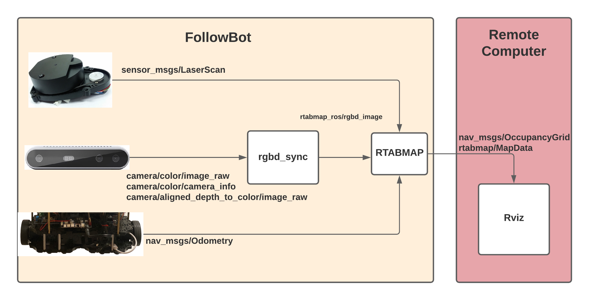
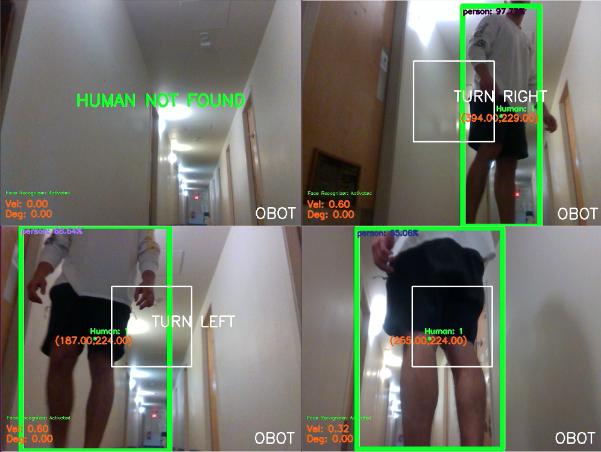
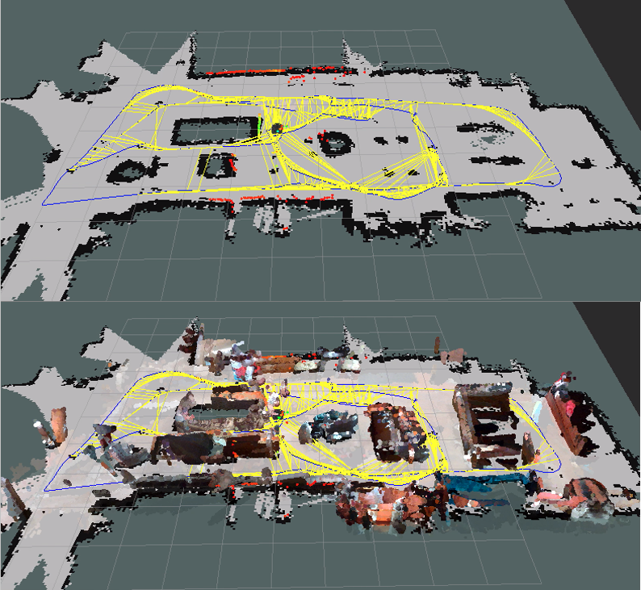
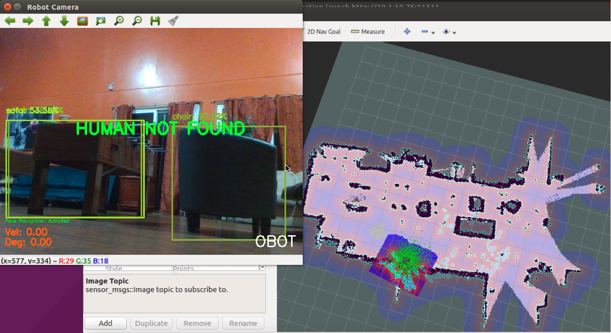

FollowBot
Uses: C++, C, C#, Python, Gazebo, Rviz
The FollowBot has been designed with the Intel RealSense Depth Camera D415 series that uses stereo vision to calculate the distance between robot and human.The robot was implemented in Python, C++, C, C#, and has been tested in real-life testing scenarios. The human following method has the ability to differentiate a person and other objects. As well as follow a person in real-time using deep neural networks. The human following robot also has the ability to create 2D and 3D maps of its environment using simultaneous localization and mapping (SLAM). The 2D occupancy grid map is created from the laser scan data, and the mobile robot pose. And 3D map created by using the RGB-D Graph SLAM approach called Real-Time Appearance Based Mapping (RTAB-Map).

Mapping and Navigation
The first objective of this project is to explore and create a 2D/3D map of the unknown environment while estimating the pose of the robot itself. SLAM is an algorithm used in robotics to create a map of an unknown environment or update a map within a known environment. The term SLAM is an acronym for Simultaneous Localization And Mapping. Suppose the LIDAR sensor or Intel RealSense D415 detects an object, the robot locates where that obstacle is, given the localization of the sensor itself and the distance and position of the detected obstacle, and marks the barrier in the map. Each time a new sensor measurement or odometry data is received. The SLAM algorithm will update the recent estimate for the robot’s localization and map of its environment.
Human Follower
The second objective of this project is to be able to follow a human. This task is performed in two main steps, detect a human, and follow the detected human. To able to follow a human, we need to identify if a human is into view of the camera. For human detection, we will use the OpenCV deep learning module with the MobileNet-SSD network. OpenCV is one of the popular open-source real-time computer vision libraries, mainly written in C/C++ and Python. The deep neural network module allows us to load a pre-trained model from one of the most popular deep learning frameworks, Caffe. The MobileNet-SSD gives notable outcomes in terms of accuracy and speed in object detection activities. After the initial detection, the distance between the human and robot must be calculated to keep the human within a reasonable distance. We will be getting depth values from our Intel RealSense D415 camera using point cloud and PCL notelets. The ROS sensor_msgs package defines a class for the PointCloud2 message type. The Robot can get the x, y, and z distance of each point from the 3D Camera with respect to the robots’s axis. Using this message type module, we can use the depth values to create a search box. If the human is too close or too far to the robot, it will move backward or forward accordingly. As well as, if the human is positioning to the right or left of the robot, the robot will rotate itself right or left accordingly.

HARDWARE SPECIFICATION
The table below defines the minimum hardware requirements for Human Follower project. The hardware is necessary to create a 2D/3D map of an unknown environment and follow a person.
| Items | FollowBot |
| Robot Chasis | TurtleBot3 Waffle |
| Computer | Intel NUC; |
| Camera | Intel RealsenseTM D415 |
| Laser Distance Sensor | 360 Laser Distance Sensor LDS-01 |
| Actuator | XM430-W210 |
| IMU |
Gyroscope 3 Axis Accelerometer 3 Axis Magnetometer 3 Axis |
| Battery | 185Wh/50000mAh(Max.130W) |
IMAGES



